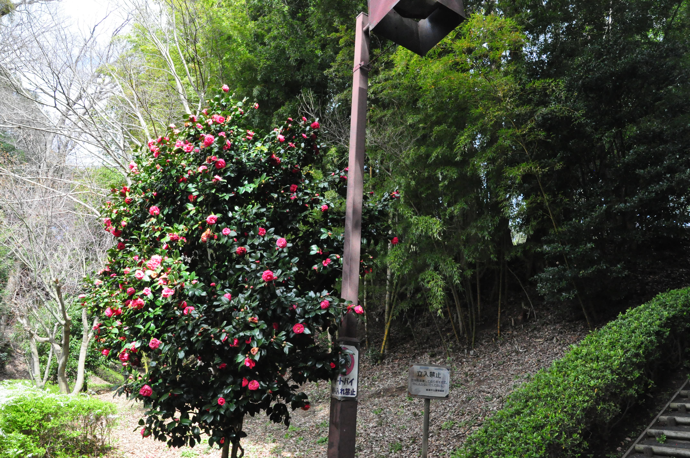

えきがなくても、
いいまちです。
明治22年に誕生した「綾瀬村」は
昭和20年に「綾瀬町」となり、
同53年に「綾瀬市」となりました。
平成元年4月に「綾瀬」誕生100年を迎え、
神奈川県で最も新しい市となっています。
現在、約84000人が暮らしています。
綾瀬市には北東部に厚木基地があり、
米海軍の主要基地として使用され、
かつてはマッカーサーが降り立ったことでも有名です。
綾瀬市には市の花である「ばら」や、
市の鳥である「カワセミ」が点在しているため、
色鮮やかな景観を楽しむことができます。
また、春を感じる桜の名所もあります。
春特有の穏やかな日差しと
桃色の景色を楽しんでみてください。
綾瀬市の有名な特産品には、
11月〜12月に収穫されるブロッコリーや
高座豚と言われる豚肉があります。
季節を感じられるお野菜や
旨みのあるジューシーなお肉を
お腹いっぱい味わってみてください
街の人の声を聞く
Interview
実際に綾瀬市に住んでいる方にお話を伺いました。
街のグルメを味わう
Food
綾瀬市に来たら一度は食べて欲しいグルメをご紹介します。
雄大な自然に癒される
Nature
息抜きに緑豊かな公園を散策してみてはいかがでしょうか。
フォトギャラリー
Photo
綾瀬市で撮影した絶景の数々をご覧ください。
アクセス
Access
「行ってみたい！」と思った方はこちらからどうぞ。
